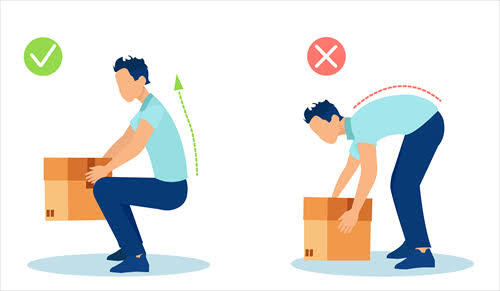

Protect technicians and sensitive hardware through Workplace Safety protocols, Fire Extinguisher classes (Class C for live electrical fires), ergonomic lifting, ESD prevention, 6S workspace organization, and diagnostic hand tools.
Learning Objectives
Identify IT workplace hazards and select Class C fire extinguishers for live electrical equipment.
Key Reminder: Electrical Fire Warning: NEVER use water-based Class A extinguishers on live computer or electrical fires—always use a Class C fire extinguisher!
Workplace Safety & Five Fire Extinguisher Classes
OHS promotes physical, mental, and social well-being by preventing physical, electrical, and ergonomic hazards. Keep workspaces ventilated, inspect tools before use, and never work on live powered components.
Electrical fires — live electrical equipment and wiring (Recommended for IT labs)
Class D
Combustible metals (magnesium, titanium, sodium)
Class K
Kitchen cooking oils and fats
Ergonomic Lifting & Electrostatic Discharge (ESD)
Safe Lifting: Assess load → clear path → feet shoulder-width apart → bend at knees (straight back, lift with legs) → keep load close without twisting torso.

Proper ergonomic lifting technique: bend at the knees, keep a straight spine, and avoid twisting.
ESD Prevention: Wear a grounded ESD wrist strap, place parts on an anti-static mat, store chips in anti-static bags, avoid carpets, and hold circuit boards by their edges.
Quiz 1.1: Occupational Health & Safety (OHS), Fire Classes & ESD
3 Questions • Instant Feedback
Lesson 1.2: The 6S Methodology & PC Troubleshooting Tools
Key Reminder: Screwdriver Size Warning: Using the wrong Phillips tip size (#0 for laptops, #1 for desktops, #2 for case/drive screws) will strip screw heads.
The 6S Lean Workspace Methodology
6S Step
Japanese Term
Practical Lab Application
1. Sort
Seiri
Eliminate broken tools and unnecessary clutter from the workbench.
2. Set in Order
Seiton
Organize daily tools on labeled shadow boards for instant access.
3. Shine
Seiso
Clean workstations and inspect cables/equipment for wear.
4. Standardize
Seiketsu
Post uniform checklists and maintenance schedules at every station.
5. Sustain
Shitsuke
Build daily habits and conduct regular team audits.
6. Safety
(Lean Addition)
Proactively eliminate hazards with anti-static mats and PPE signage.
Essential PC Troubleshooting Hand Tools
Phillips Screwdrivers (#0, #1, #2), Flathead Screwdriver (prying covers/DIP switches), Torx Screwdrivers (T8, T10) (star-shaped tips for laptops/drives), Needle-Nose Pliers (jumpers & dropped screws), Thermal Paste (fills microscopic air gaps between CPU and heatsink), Multimeter (measures Voltage V, Current A, Resistance Ω), and USB Bootable Drive.
Quiz 1.2: The 6S Methodology & PC Troubleshooting Tools
3 Questions • Instant Feedback
References
Occupational Safety and Health Administration (OSHA). (2024). Workplace Safety, Ergonomics, and Portable Fire Extinguisher Standards (29 CFR 1910.157). U.S. Department of Labor.
Hirano, H. (1995). 5 Pillars of the Visual Workplace: The Sourcebook for 5S Implementation (Extended to 6S Safety). Productivity Press.
Read through each lesson and test your understanding with the inline quiz at the end. Click Mark Lesson Completed to update your progress bars and daily study streak!